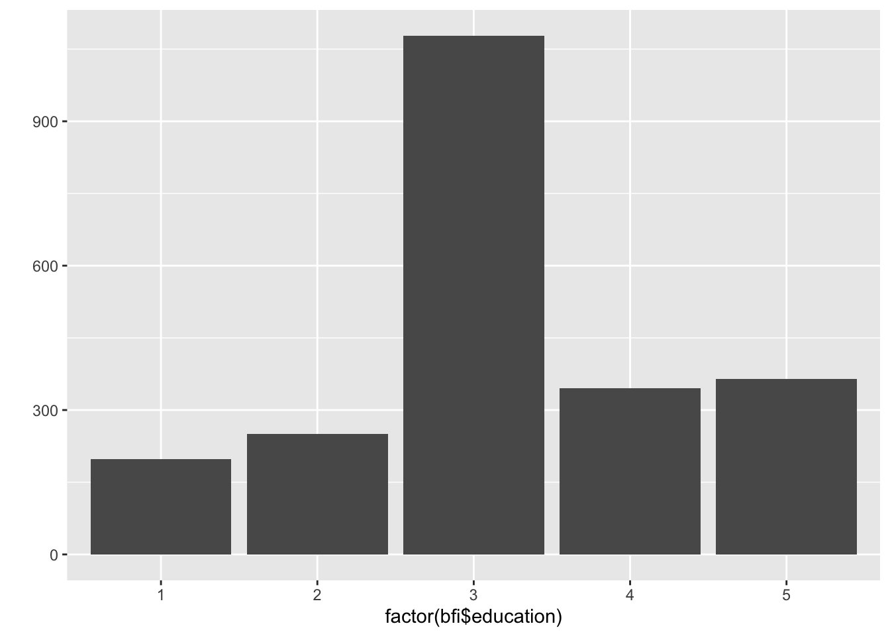

library(psych); data(bfi)
bfi <- bfi[complete.cases(bfi), ]#remove missing row-wise
mean(bfi$age); median(bfi$age)[1] 29.51029[1] 26sd(bfi$age); IQR(bfi$age)[1] 10.66422[1] 15Kontinuerlige variable
Sentraltendens:Gjennomsnitt eller median
Spredning: Standardavvik eller interkvartilbredde
Kategoriske variabler:
Kontinuerlig:
library(psych); data(bfi)
bfi <- bfi[complete.cases(bfi), ]#remove missing row-wise
mean(bfi$age); median(bfi$age)[1] 29.51029[1] 26sd(bfi$age); IQR(bfi$age)[1] 10.66422[1] 15Kategorisk:
table(bfi$gender)
1 2
735 1501 I en normalfordeling så er 95% av observasjonene mindre enn to standardavvik unna gjennomsnittet. “Uvanlig”: mer enn 2 standardavvik vekk fra snittet.
library(tidyverse)
ggplot(data = data.frame(x = c(-3, 3)), aes(x)) +
stat_function(fun = dnorm, n = 101, args = list(mean = 0, sd = 1)) + ylab("") +
scale_y_continuous(breaks = NULL)+ggtitle("Standard normalfordeling N(0,1)")For kontinuerlige variabler: histogram eller boksplott
hist(bfi$age)boxplot(bfi$age~bfi$gender)qplot(factor(bfi$education))+geom_bar()
#the older the more agreeable
sumA <- 7-bfi$A1+bfi$A2+bfi$A3+bfi$A4+bfi$A5
cor(sumA,bfi$age)[1] 0.144486qplot(bfi$age, sumA)+geom_smooth(method="lm")lm(sumA~bfi$age) %>% summary()
Call:
lm(formula = sumA ~ bfi$age)
Residuals:
Min 1Q Median 3Q Max
-18.6427 -2.7269 0.7187 3.2006 7.6825
Coefficients:
Estimate Std. Error t value Pr(>|t|)
(Intercept) 21.654892 0.273855 79.074 < 2e-16 ***
bfi$age 0.060236 0.008728 6.902 6.68e-12 ***
---
Signif. codes: 0 '***' 0.001 '**' 0.01 '*' 0.05 '.' 0.1 ' ' 1
Residual standard error: 4.4 on 2234 degrees of freedom
Multiple R-squared: 0.02088, Adjusted R-squared: 0.02044
F-statistic: 47.63 on 1 and 2234 DF, p-value: 6.675e-12For hvert år alder øker så forventes en økning i sumA på 0.06
Teste om menn og kvinner har samme alder i populasjonen \(H_0: \mu_M=\mu_K\) vs \(H_A: \mu_M \neq \mu_K\). Da brukes en \(t\)-test.
t.test(bfi$age~bfi$gender)
Welch Two Sample t-test
data: bfi$age by bfi$gender
t = -2.2367, df = 1481.8, p-value = 0.02546
alternative hypothesis: true difference in means between group 1 and group 2 is not equal to 0
95 percent confidence interval:
-2.0012630 -0.1311404
sample estimates:
mean in group 1 mean in group 2
28.79456 29.86076 Vi har støtte for å hevde at det er forskjellig snittalder menn vs kvinner (når signifikansnivået \(\alpha=.05\))
Type I feil: Å forkaste nullhypotesen når den er sann. Dette skjer 1 av 20 ganger i det lange løp, når signifikansnivået er 5%.
Type II feil: Å ikke forkaste nullhypotesen når den er usann. Vi kan minske sjansen for dette ved å ha et stort utvalg.
Testens styrke: Sjansen for at man ikke begår Type II feil når \(H_0\) er usann. Styrken øker når utvalgsstørrelsen øker.
For gjennomsnitt så kan vi beregne et 95% konfidensintervall. Vi er 95% sikre på at populasjonsverdin ligger i intervallet
t.test(bfi$age)
One Sample t-test
data: bfi$age
t = 130.85, df = 2235, p-value < 2.2e-16
alternative hypothesis: true mean is not equal to 0
95 percent confidence interval:
29.06803 29.95255
sample estimates:
mean of x
29.51029 Konfidensintervall for alder er (29.07, 29.95).
Enkel regresjon predikerer verdien på en avhengig variabel y som en lineær funksjon av en uavhengig variabel x.
lm(sumA~bfi$age) %>% summary()
Call:
lm(formula = sumA ~ bfi$age)
Residuals:
Min 1Q Median 3Q Max
-18.6427 -2.7269 0.7187 3.2006 7.6825
Coefficients:
Estimate Std. Error t value Pr(>|t|)
(Intercept) 21.654892 0.273855 79.074 < 2e-16 ***
bfi$age 0.060236 0.008728 6.902 6.68e-12 ***
---
Signif. codes: 0 '***' 0.001 '**' 0.01 '*' 0.05 '.' 0.1 ' ' 1
Residual standard error: 4.4 on 2234 degrees of freedom
Multiple R-squared: 0.02088, Adjusted R-squared: 0.02044
F-statistic: 47.63 on 1 and 2234 DF, p-value: 6.675e-12Ja, alder er signifikant, men effekten er nesten uten praktisk verdi. \(R^2=.02\) er den forklarte variansen. Så 2% av variasjon i agreeableness kan forklares av alder.
Fremdeles en avhengig variabel Y. Men nå har vi flere uavhengige/prediktorer \(X_1, \ldots, X_k\).
Ceteris paribus: Alt annet likt. Dvs vi får effekt av hver X, kontrollert for at de andre X’ene ikke forandrer seg.
Dummykoding: Kategoriske variable kan kodes med dummyer som er 0/1. Hver dummy gir kontrast til referansekategorien.
sumN <- bfi$N1+bfi$N2+bfi$N3+bfi$N4+bfi$N5
lm(sumA~sumN+bfi$age+bfi$gender) %>% summary()
Call:
lm(formula = sumA ~ sumN + bfi$age + bfi$gender)
Residuals:
Min 1Q Median 3Q Max
-18.0320 -2.4125 0.5453 3.0154 9.3515
Coefficients:
Estimate Std. Error t value Pr(>|t|)
(Intercept) 20.447369 0.461709 44.286 < 2e-16 ***
sumN -0.141978 0.015098 -9.404 < 2e-16 ***
bfi$age 0.047090 0.008414 5.596 2.46e-08 ***
bfi$gender 2.290064 0.191216 11.976 < 2e-16 ***
---
Signif. codes: 0 '***' 0.001 '**' 0.01 '*' 0.05 '.' 0.1 ' ' 1
Residual standard error: 4.211 on 2232 degrees of freedom
Multiple R-squared: 0.1041, Adjusted R-squared: 0.1029
F-statistic: 86.48 on 3 and 2232 DF, p-value: < 2.2e-16En økning i neuroticism sumskår på 1 poeng er forventet å minske sumskår A med .14. Modellen forklarer 10.3% av variasjonen in A.
Homoskedastiske feil-ledd. Sjekkes ved å plotte residualene og se at de har lik varians uavhengig av den tilpassete y verdi
Linearitet. Sjekkes med plott
Hvis \(n\) er lav: Normalfordelte feil-ledd. Sjekkes i QQ plot
Vi bruker performance::check_model() og sjekker visuelt
Hvis vi har mange grupper kan vi sjekk om gjennomsnittene er like i alle gruppen. Enten bruke aov() funksjonen eller bare multippel regresjon og \(F\) statistikken. \(H_0\): snittet er likt i alle grupper, \(H_A\) snittet er ulikt i noen grupper.
Er agreeableness den samme i alle utdanningsnivå?
bfi$education <- factor(bfi$education)# si ifra at dette er grupper og ikke intervallskala
aov(sumA~factor(bfi$education)) %>% summary() Df Sum Sq Mean Sq F value Pr(>F)
factor(bfi$education) 4 478 119.50 6.101 7.01e-05 ***
Residuals 2231 43699 19.59
---
Signif. codes: 0 '***' 0.001 '**' 0.01 '*' 0.05 '.' 0.1 ' ' 1p-verdi < .05 så vi forkaster \(H_0\)! Det er ikke samme Agreeableness i all utdanningsnivå
lm(sumA~bfi$education) %>% summary()
Call:
lm(formula = sumA ~ bfi$education)
Residuals:
Min 1Q Median 3Q Max
-18.7978 -2.7880 0.3269 3.2120 7.4141
Coefficients:
Estimate Std. Error t value Pr(>|t|)
(Intercept) 22.5859 0.3145 71.810 < 2e-16 ***
bfi$education2 0.2021 0.4210 0.480 0.631202
bfi$education3 1.2119 0.3422 3.542 0.000406 ***
bfi$education4 0.4055 0.3944 1.028 0.304002
bfi$education5 1.0872 0.3908 2.782 0.005449 **
---
Signif. codes: 0 '***' 0.001 '**' 0.01 '*' 0.05 '.' 0.1 ' ' 1
Residual standard error: 4.426 on 2231 degrees of freedom
Multiple R-squared: 0.01082, Adjusted R-squared: 0.009047
F-statistic: 6.101 on 4 and 2231 DF, p-value: 7.009e-05F-statistikken har samme p-verdi! I tillegg får vi effektene vs referansekategorien 1.
Når den avhengige variabelen er 0/1 så predikerer vi verdien til log-odds for \(P(Y=1)=p\): \[ log(\frac{p}{p-1})=a+b_1 X_1+ b_2X_2+\epsilon\] Kan agreeableness forutsi kjønn (når vi kontrollerer for alder) ?
female <- ifelse(bfi$gender ==2, 1, 0)
glm(female ~ sumA+bfi$age, family="binomial") %>% coefficients()(Intercept) sumA bfi$age
-1.84708532 0.10653968 0.00331439 Ja, jo høyere A, jo større er sjansen for at det er en dame.
Hvor stabile er målingene til skalaen? Hvis vi gjør spørreundersøkelsen på ny, hva er korrelasjon mellom gammel og ny score?
Dette tallet kalles reliabilitet og måles oftest ved Cronbach’s alpha. Bør være minst 0.7-0.8
psych::alpha(select(bfi, paste0("A", 1:5)), check.keys=T) %>% summary()
Reliability analysis
raw_alpha std.alpha G6(smc) average_r S/N ase mean sd median_r
0.71 0.71 0.68 0.33 2.5 0.0099 4.7 0.89 0.34Dette er en kjerneegenskap. Valide instrument måler det de er ment å måle, og målingene brukes på en måte som gjenspeiler dette.
Et veldig stort og filosofisk felt. Det finnes flere typer validitet og etablering av validitet er en prosess med mange refleksjoner. Her er en nyttig link
En latent variabel er ikke observerbar, men vi kan måle den indirekte vha indikatorer= items i spørreskjema. Et sett av items som måler en faktor må skilles fra andre items som måler andre faktorer. Det får vi til med EFA.
EFA:
CFA: Da vet vi indikatorene og vi bruker lavaan til å beregne faktorladninger og regresjoner mellom latente variabler.